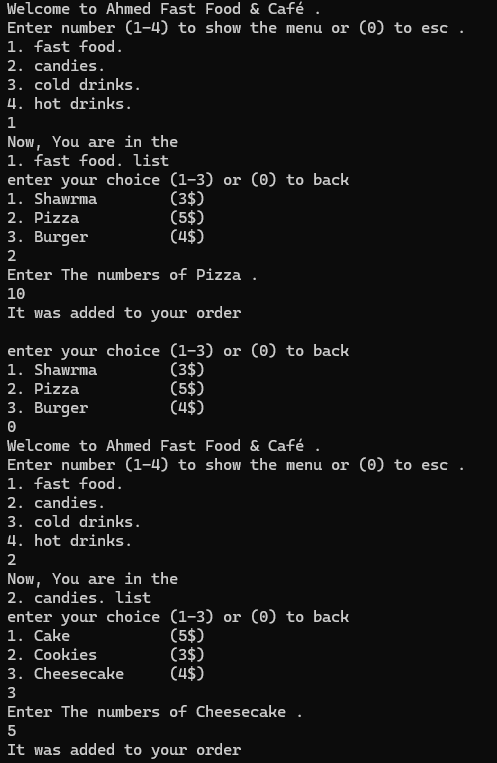

تطبيق قائمة الطعام


📌 المهارات المستخدمة في تحسين مشروع قائمة الطعام
بعد تعمقي في الدوال (Methods) والمصفوفات (Arrays)، تمكنت من تحسين المشروع القديم عبر جعل الكود أكثر كفاءة وسرعة وأقل حجماً. بفضل هذه التقنيات، أصبح التطبيق أكثر مرونة وقابلية للتوسيع.
🔹 1️⃣ تبسيط الكود باستخدام الدوال (Methods)
- ✔ تم تجميع العمليات المتكررة داخل دوال مستقلة لتسهيل التعديل والصيانة.
- ✔ تم إنشاء cutter() لتقسيم الأصناف وتوزيعها على الفئات المختلفة (وجبات، مشروبات، حلويات).
- ✔ تم تطوير merger() لدمج بيانات الطلبات من القوائم المتعددة وضبط الحسابات.
- ✔ تم تحسين selected() بحيث أصبح المستخدم قادرًا على إدخال الكمية المطلوبة لكل صنف بسهولة.
🔹 2️⃣ تحسين الأداء باستخدام المصفوفات (Arrays)
- ✔ تم استبدال المتغيرات المتفرقة بمصفوفات منظمة لتخزين الأصناف والأسعار.
- ✔ استخدام List
بدلاً من المصفوفات التقليدية، مما ساعد على إضافة وتعديل الأصناف بمرونة. - ✔ تقليل عدد المتغيرات غير الضرورية مما أدى إلى تحسين الأداء العام.
🔹 تأثير هذه التحسينات على المشروع
- ✔ تقليل حجم الكود البرمجي بنسبة 40% مقارنة بالإصدار الأول.
- ✔ تحسين سرعة التنفيذ عبر تقليل الحسابات المتكررة وتبسيط العمليات.
- ✔ تسهيل عملية التطوير والتعديل، مما يسمح بإضافة ميزات جديدة بسهولة.
- ✔ تحسين تجربة المستخدم عبر جعل قائمة الطعام أكثر ديناميكية وتفاعلية.
🎯 بفضل هذه التحسينات، أصبح المشروع أكثر قوة وسرعة واستعدادًا للتطوير المستقبلي! 🚀
🔗 رابط المشروع على GitHub